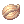
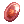

FAQ: Homunculus and Azzy AI Tutorial
Homunculi are the special companions of Alchemist classes, created to assist their master in battle. They have their own stats, skills and levels and can evolve after becoming loyal, and mutate to their S form after reaching level 99, gaining new skills and upgrading their level cap to 200.
Homunculus behavior can be controlled using the Azzy AI application, which is included in NovaRO's Full Installer; however, you can download an AI with default settings by clicking here.
See also:
Homunculus Basics
What is the max Level of Homunculus?
Homunculus (pre-mutation) caps at 99, while a Homunculus S (mutated) caps at 200.
How do I get a Homunculus?
- Create a Merchant character and turn them into an Alchemist.
- Talk to the Platinum Skills NPC to get the skill Bioethics, it allows leveling the three Homunculus related skills, Rest, Call Homunculus, and Resurrect Homunculus.
- To create your Homunculus, you will need an Embryo. Those are not available at NPC shops and can instead be purchased from the Market (@go 37) or self-made. You may need multiple of those to get the specific Homunculus you want, as the base Homunculus you get is random.
- You can also use the #trade channel, a great option if nobody is selling it at the market.
- You can also your own Embryo using the skill Pharmacy. You can purchase the materials needed in the Alchemist Guild, located at the South West corner of Aldebaran.
- With Embryos in your Inventory, use the Call Homunculus skill. An Embryo will disappear from your Inventory and a newly formed Homunculus should appear near you. You can use Alt + R to view your Homunculus Info window, and use the command "@hominfo" to view detailed Homunculus stats and Intimacy points.
- If you did not get the Homunculus you want, you can delete it permanently by clicking the "del" button on the Homunculus Info window and trying again. Each base Homunculus has two forms and those do not differ in anything aside from appearance.
- After you're satisfied with your choice, you can resummon your Homunculus through the Call Homunculus skill, or the Ressurrect Homunculus skill, if it died.
- Your Homunculus has no penalties if it dies and will stay with you until you delete it, even after changing jobs or Transcending.
I used Call Homunculus but it did not appear!
Call Homunculus consumes a  Seed of Life each time its used. Your Homunculus will appear and stay active for 30 minutes or until you Vaporize it. To call it again, you have to cast Call Homunculus and spend another Seed of Life.
How do I raise my Homunculus?
You have to increase its Intimacy by feeding it (between 11-81 hunger). Do not let it starve (letting its hunger reach 10 or less) but do not overfeed it (feeding when its hunger is at 81 or more). Homunculus food items can be bought from Trader NPC inside Geffen Tool Shop, or from Pet Groomer NPC near the East Inn and Equipment Shop in Prontera.
There's also an autofeed option that can be enabled on Alt+R. It'll feed your Homunculus whenever it's hunger drops to 11, making it an efficient and easy way to go about it. You can leave it always on, without any drawbacks, for as long as you have the correct food item in your inventory.
Feeding your Homunculus at these hunger levels will give him that many Intimacy points:
| Hunger | Intimacy | |
|---|---|---|
| 1 ~ 10 | 5 | |
| 11 ~ 31 | 10 | |
| 31 ~ 81 | 7 | |
| 81 ~ 100 | 0 | |
It's Intimacy will change depending on how many Intimacy points it has.
| Intimacy | Status | |
|---|---|---|
| 1 ~ 3 | Hate with Passion | |
| 4 ~ 10 | Hate | |
| 11 ~ 100 | Awkward | |
| 101 ~ 250 | Shy | |
| 251 ~ 750 | Neutral | |
| 751 ~ 910 | Cordial | |
| 911 ~ 1000 | Loyal | |
Whenever it reaches Loyal, you can evolve it by using a  Stone of Sage. You can get one as a drop from monsters. The evolved form will have higher Max HP and SP, higher stats and be able to mutate once it reaches level 99 (given that you are a Genetic).
How do I level my Homunculus?
You will be doing most of the killing, so this will be best done when you're a Genetic. Homunculi obtains a copy of 50% of mob kill experience, and 10% quest experience you get. Bonuses from HE Manuals and whatnot do affect this value. Mind you that it will not receive any EXP while dead and/or Rested/Vaporized.
Mobby maps such as Orc Dungeon, Desert Wolves, Magma Dungeon 2F and Rachel Sanctuary and the 85+ Gramps will get you great EXP for the first levels.
Eventually, you'll be moving to more daunting tasks, such as:
- MVP hunting
- Bloody Branches
- Instances, such as:
- Gramps maps and Gramps quest
- Eden Board Quests
- Tomb of the Fallen
How do I get Homunculus S?
- You must be a Genetic.
- Your Homunculus must be evolved and have reached level 99. It doesn't necessarily needs to be Loyal, as it will gain its Loyal skill (e.g. Self Destruction, S.B.R. 44, Blood Lust or Mental Charge) once the mutation is completed, regardless of the current Intimacy level.
- Go to Lighthalzen (@go 20) and enter the Geneticist Guild building at the 8-9 o'clock area of the map (@navi job3_gen01 45 50).
- Inside, talk to Viorel NPC to start a short quest. You can pay a 50k fee to choose which Homunculus S you get or let Viorel decide for you randomly.
What is the best Homunculus?
The best Homunculus will depend on what you want to do with it, and whether their characteristics suit your style. Here's a quick rundown of the base and mutated Homunculi characteristics.
| Homunculus | Characteristics |
|---|---|
| Amistr (Brute) | Tank type. Amistr has high HP pool, Defense, and decent Attack. Tends to have low INT, SP pool, and low SP regen. |
| Its loyal skill (Blood Lust) temporarily boosts its physical attack damage. Amistr's Castling is also useful to get yourself out of dangerous situations. All-round good Homunculus base for general purpose. | |
| Filir (Brute)
|
ASPD type. Filir has decent Attack and Attack Speed. Tends to have moderate HP pool and low SP pool. |
| Filir has a melee attack skill (Moonlight) that is instacast. Its loyal skill (S.B.R. 44) deals damage according to its Intimacy, and reduces Intimacy after usage. | |
| Lif (Demi-Human) | Magic type. Lif has decent Magic Attack and SP pool. Tends to have low Attack, Defense, Attack Speed, and HP pool. |
| Lif's recovery and movement speed buff skills (Healing Hands and Urgent Escape) are not useful after the owner becomes a Genetic. Aesthetically pleasing but functionally dubious compared to other Homunculi. | |
| Vanilmirth (Formless) | Mandatory Homunculus for brewers, as Vanilmirth's Instruction Change improves Pharmacy success rates. Well-rounded stats and stat growth, and is also a good Homunculus base for general purpose. |
| Vanilmirth has a magic attack skill (Caprice) that is instacast. Its loyal skill (Self Destruction) deals damage according to its MaxHP, and reduces Intimacy after it is used. |

| Homunculus S | Characteristics |
|---|---|
| Bayeri (Brute) | Holy damage dealer. Stahl Horn is Neutral by default, single target, and based on ATK. Heilage Stange is a Holy AoE and based on MATK. |
| Bayeri's buff skills and defensive skills (Goldene Ferse, Angriffs Modus, Stein Wand) are instacast. Its offensive skills have fixed cast time and are interruptible. | |
| Dieter (Formless) | Fire damage dealer. Lava Slide is a Fire AoE based on ATK. Dieter can also endow itself and its owner's attacks with Fire element and increase both their physical attack damage using Pyroclastic. |
| Dieter's debuff skill (Volcanic Ash) can cause enemies' attacks to miss frequently, their skills may also fail to activate at 50% chance, and cause enemies to receive 150% more damage from Fire element attacks. Dieter's defensive skill (Granitic Armor) temporarily reduce the damage received by the owner and Dieter itself. | |
| Eira (Angel) | Wind and Neutral damage dealer. Eira's Eraser Cutter and Xeno Slasher's damage are based on ATK. The skill level determines its element (Neutral at Lv 2 and 4, Wind at Lv 1, 3, and 5). |
| Eira's buff skill (Overed Boost) increase Flee and ASPD of Eira itself and its owner, at the cost of reducing its Hunger level. Using Overed Boost will cause Eira to require more frequent feeding but that also means its Intimacy can be increased faster than other Homunculus. Eira also has an auto-resurrection skill that reduces Intimacy points (Light of Regen), and a healing skill that may inflict Silence on the target (Silent Breeze). | |
| Eleanor (Demi-Human) | Single target, Neutral element DPS. |
| Eleanor has no buff skills and is best suited for 1v1 fights. | |
| Sera (Insect) | Poison and Neutral damage dealer. Sera's Needle of Paralysis is based on ATK may cause an enemy to be unable to move. Its Poison Mist is a Poison AoE that slowly damages and inflicts Blind on enemies. |
| Sera's Pain Killer makes mobbing enemies very possible, due to the reduction on normal attacks. Sera's Summon Legion is also useful as additional DPS and for Plant-type monsters that take 1 damage from any attack. It is possible to use Summon Legion Lv 5, 3, and 1 simultaneously. |
The HomuncuBank
A strange machine, currently located at the 2nd floor of the Main Office. It allows Alchemists to store their Homunculus, giving the possibility of creating a new one from scratch, without deleting the other, and swapping between them.
Each slot has a cost of 20M Zeny and 175 Gold Coins. Alternatively, you can pay 5000 Nova Points or get a HomuncuBank Ticket from the Nova Shop. You can have a maximum of 4 slots and still have 1 Homunculus with you. This enables you to have up to 5 different Homunculi combinations. Swapping Homunculi can be done at any time, without any fees, but there's a 5-minute cooldown until you're able to swap again.
Azzy AI Tutorial
On the newer clients, support for certain custom AI features has been disabled. Specifically the AI's ability to automatically acquire targets, making the Homunculus unable to automatically attack targets. This was an official kRO change, not a bug, and does not have a "fix" on other servers.
Thanks to NovaExt, this feature has been re-enabled here on NovaRO !!
As such, you will need to have a fully functioning NovaEXT installation in order to use a customized Homunculus AI. For troubleshooting any issues, refer to the bottom of the page.
The Azzy AI application is included in NovaRO's Full Installer. If, for some reason you do not have it in your NovaRO folder, you can download an AI with default settings by clicking here and extracting the file to your NovaRO installation folder, overwriting all.
Some examples on its functionality:
Be sure to double-check the OldHomunType field. Set UseDanceAttack to False if your Homunculus is struggling to recover SP.
This is where you configure how, when, and how often your Homunculus uses attack skills and buff skills. Be sure to read their skill descriptions carefully!
Miscellaneous configuration related to how your Homunculus moves around relative to its master and enemies.

Here you configure what your Homunculus should do when it encounters specific enemies.


After making any changes to the configuration, type '@refresh' in game so that your Homunculus' behavior updates. Putting the Homunculus to Rest and summoning it again also works to apply any changes you've made to its AI configuration.
In the USER_AI folder, find the AzzyAIConfig application and run it.
It will appear somewhat like this. Don't worry if yours look slightly different, the contents and available configurations should be the same for the most part, although the latest Azzy AI version (1.551) may have configurations unavailable in the older versions (1.54, as shown below).

Notice there are several tabs on the top half of the window. For configuring Homunculus, you need to run a thorough check on the Homunculus tab and Homunculus Tactics tab. First of all, let's discuss the configurations in Homunculus Tactics tab.
Homunculus Tactics Tab
When you click the Homunculus Tactics tab, it would appear like this.

This is where you configure what your Homunculus should do when it encounters monsters in the game. Generally it's best to set Basic Behavior to Attack (Medium) or Attack (High) so that your Homunculus will aggro on all the monsters within its sight.
To configure how your Homunculus uses its attack skills, click the dropdown lists on Use Attack Skills and Skill Class. Some Homunculus skills such as Caprice and Moonlight may have a long cooldown/reuse delay when the Homunculus autocasts them, and you might prefer to have your Homunculus use its Homunculus S skills (e.g. Lava Slide, Sonic Claw, etc.) so adjust these to your preference.
Eleanor owners in particular should configure the Skill Class in Homunculus Tactics tab to synchronize with configurations in the AutoSkill Options category in the Homunculus tab. This is to prevent Eleanor from displaying odd behavior, and to ensure Eleanor casts its attack skills properly.
The Rescue dropdown list tells your Homunculus whether to change target to a monster that attacks itself, its owner, its owner's Mercenary, characters in the friend list, or all of them. This is useful to ensure that your Homunculus will draw the mob's aggro to itself, thus allowing you to wipe out the mob from a safe distance.
Homunculus Tab
The Homunculus tab is where more detailed configuration for Homunculus can be found. This is where you configure how and when your Homunculus uses its skills, how it moves around relative to its owner and enemies, and so forth. It consists of 9 options, as seen below.
For general PvE/PvM purposes and for the sake of simplicity, several options such as PvP Options and Berserk Options will not be discussed here.
The box at the bottom half of the Azzy AI window describes what each configuration does, so be sure to read that carefully.

Basic Options
This is the basic configurations of Homunculus, where you determine when it should go aggro, whether it should use skills or not, how many monsters it should tank before it does something else (such as use an AoE skill), and so forth.
Pay attention to Old Homun Type option and be sure to set it to the appropriate Homunculus that you are currently using, to prevent odd behavior and to ensure your Homunculus uses its skills.
Whether your Homunculus has learned its attack skill or not, generally it's better to set Use Attack Skill to True.
If you feel like your Homunculus is attacking too slowly, set Use Dance Attack to True. Otherwise, set it to False so that your Homunculus would stand in one spot while attacking, thus allowing it to regenerate SP easier.

Autobuff Options
This is where you control when and how your Homunculus uses its buff/supportive, defensive, and recovery skills, including:
- Amistr's Defense (Bulwark), Castling, and Blood Lust
- Filir's Over Speed (Accelerated Flight) and Fleet Move (Flitting)
- Lif's Mental Charge, Urgent Escape, and Healing Hands
- Vanilmirth's Chaotic Blessings
- Bayeri's Stein Wand, Goldene Ferse, and Angriffs Modus
- Dieter's Granitic Armor, Magma Flow, Lava Slide, and Pyroclastic
- Eira's Silent Breeze and Over Boost
- Sera's Pain Killer and Poison Mist

Auto Skill Options
This is where you configure how and when your Homunculus uses its attack/offensive skills. It configures how your Homunculus uses skills such as:
- Bayeri's Stahl Horn and Heilage Stange
- Dieter's Lava Slide
- Eira's Eraser Cutter, Xeno Slasher, and Silent Breeze
- Eleanor's combo skills
- Sera's Needle of Paralysis, Poison Mist, and Summon Legion
It's very important that you run through all the options thoroughly and adjust it to suit your Homunculus. Keep in mind that several skills are only usable when the Homunculus is in melee range (e.g. Sera's Needle of Paralysis and Pain Killer, Eleanor's combo skills), so be sure to adjust Use Skill Only option so that it suits your Homunculus.
Eleanor owners in particular should double check the configurations in Auto Skill Option and Homunculus Tactics tab to ensure that Eleanor uses its skills properly.

Standby Options and Walk/Follow Options
Here you can configure how your Homunculus moves around relative to you and to enemies. You can also determine whether your Homunculus sits with you when you sit, or have it patrol around you instead.

AI Troubleshooting
Some AI problems can be common occurrences, such as AI.lua errors, Homunculus not auto attacking and others.
- If you have any questions/problems regarding AI configuration, refer to the mini guide above.
Make sure your game client is updated and follow all the steps below, in order, if you're having any technical problems related to AI:
- Close the game;
- Go to your NovaRO installation folder;
- Delete the folder "AI";
- Download this file, and extract it to your NovaRO installation folder;
- Install all the VC++ Redistributables listed below. This step is extra important.
- In-game, make sure the AI is set to "Customized". You change it by typing
/hoai, followed by@refresh; - Make sure your Homunculus is not in passive mode. You can alternate between 'Passive' and 'Aggressive' mode with the shortcut Alt+T.